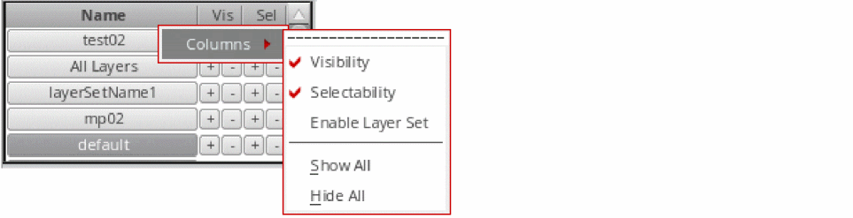

Layer Set Manager
The Layer Set Manager toolbar in the Layers panel lists all the layer sets that are available in the current design window.
You can use the Layer Set Manager to perform the following tasks:
- Reorder layer sets by dragging them up and down the list.
-
Select one or more layer sets by using the following methods:
- To select a single layer set, click that layer set.
-
To select multiple adjacent layer sets, click the first layer set in the sequence, and then hold down the
Shiftkey and click the last layer set in the sequence. -
To select multiple non-adjacent layer sets, select a layer set, and then hold down the
Ctrlkey and click the other layer sets that you want to select.
All layer sets selected in the Layer Set Manager are considered active and a layer-purpose pair is listed in the Layers panel if it is a member of at least one of the selected layer sets. -
Turn on or off the visibility or selectability status of all the layers present in a layer set by clicking the corresponding + or – button, respectively. These buttons work with respect to the filter settings defined on the Scope and Filter toolbars if the pteLSManagerRespectFilters environment variable is set to
t. - Set a layer set as active and turn on the visibility and selectability of all its member layers by clicking the layer set with the middle mouse button. The visibility and selectability for all other layers is turned off.
-
Disable a layer set by deselecting the corresponding check box in the column labeled E. This column is displayed when you right-click a column header in the Layer Set Manager and choose Columns – Enable Layer Set from the shortcut menu.
The layer set that is currently active cannot be disabled. -
Save the layer set order and status—whether enabled or disabled—in the
layerset.orderfile.
Names of layer sets that are not synchronized with corresponding layer set files appear italicized.
Colored Layer Set Buttons
In the Layer Set Manager, by default, layer set buttons are not shown as colored. You can enable the
For example, the following figure shows the active layer set All Layers in black. The inactive layer set, MyLayerSet, is highlighted in blue, when you set pteSetLayerSetColoredLpp to pick the button color from the Metal1-Drawing layer-purpose pair.
Related Topics
Return to top